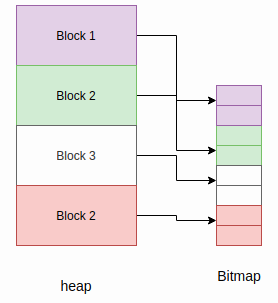

Memóriakezelés¶
Az olyan programozási nyelvekkel ellentétben, mint a C/C++, a MicroPython elrejti a memóriakezelés részleteit a fejlesztő elől, mivel automatikus memóriakezelést támogat. Az automatikus memóriakezelés egy olyan technika, amelyet az operációs rendszerek vagy alkalmazások használnak a memória lefoglalásának és felszabadításának automatikus kezelésére. Ez kiküszöböli az olyan problémákat, mint például annak elfelejtése, hogy felszabadítsuk egy objektumhoz lefoglalt memóriát. Az automatikus memóriakezelés azt a kritikus problémát is elkerüli, hogy már felszabadított memóriát használjunk. Az automatikus memóriakezelés sokféle formát ölthet, az egyik közülük a szemétgyűjtés (garbage collection, GC).
A szemétgyűjtőnek általában két feladata van;
Új objektumok lefoglalása a rendelkezésre álló memóriában.
A nem használt memória felszabadítása.
Számos GC algoritmus létezik, de a MicroPython a Mark and Sweep stratégiát használja a memória kezelésére. Ennek az algoritmusnak van egy megjelölési (mark) fázisa, amely bejárja a halmot (heap), és megjelöli az összes élő objektumot, míg a söprési (sweep) fázis végigmegy a halmon, és visszanyeri az összes meg nem jelölt objektumot.
A MicroPython szemétgyűjtési funkciói a gc beépített modulon keresztül érhetők el:
>>> x = 5
>>> x
5
>>> import gc
>>> gc.enable()
>>> gc.mem_alloc()
1312
>>> gc.mem_free()
2071392
>>> gc.collect()
19
>>> gc.disable()
>>>
Még ha a gc.disable() meg is van hívva, a gyűjtés a gc.collect() hívásával kiváltható.
MicroPython memória C kódból¶
A szemétgyűjtő ismeretére akkor van szükség, ha olyan C kódot írunk, amely a „Python halomból” (heap) foglal memóriát (azaz a m_malloc(), m_malloc0(), m_free() stb. függvények).
A szemétgyűjtő megjelölési fázisa a halommemóriára mutató élő pointereket keresi a következő gyökerekből kiindulva:
A fő Python futtatókörnyezet (vagy REPL) verme.
Az egyes „Python szálak” vermei azon portok esetében, amelyek a Python szálakat natív operációsrendszer-szálakra vagy -feladatokra építve valósítják meg.
A C kódban a
MP_REGISTER_ROOT_POINTERmakró használatával definiált „gyökérpointerek”. Ez az ajánlott módja annak, hogy statikus hatókörű pointereink legyenek a Python halomra.A
m_tracked_calloc(),m_tracked_reallocésm_tracked_free()függvényekkel végzett nyomon követett lefoglalások. Ezek a speciális függvények lehetővé teszik egy olyan memóriablokk lefoglalását, amelyet a szemétgyűjtő mindig élőnek tekint. A C-beli memóriafoglaláshoz hasonlóan ez a memória csak am_tracked_free()hívásával vagy szoft újraindítással szabadul fel. Minden nyomon követett lefoglaláshoz kis memóriahasználati és futásidejű többletköltség társul. Ez a funkció nem minden porton van alapértelmezetten engedélyezve.
A szemétgyűjtő ezután rekurzívan végigvizsgálja és megjelöli a gyökérpointerek által mutatott összes memóriát, amíg az összes cím ki nem merül. Ez elegendő ahhoz, hogy megtalálja az összes olyan Python objektumot, amelyet a MicroPython futtatókörnyezet még használ.
A következő memóriát azonban a szemétgyűjtő nem fogja megvizsgálni, és így idő előtt felszabadulhat:
Statikus vagy globális C változók, amelyek halommemóriára mutató pointereket tartalmaznak.
Olyan pointerek, amelyek nem egy lefoglalt puffer „fejére” mutatnak (azaz a
m_malloc()által visszaadott pontos címre), hanem a lefoglalt pufferen belüli egy címre (például egy beágyazott struktúrára mutató pointer). Teljesítménybeli okokból a szemétgyűjtő ezekben az esetekben nem jelöli meg a körülvevő puffert.Bármely olyan szál vagy RTOS feladat verme, amely nem futtat Python kódot, vagy nincs manuálisan „Python szálként” regisztrálva (a natív szálakat vagy feladatokat támogató portok esetében).
Az ilyen helyzetekben a felszabadítás utáni használat (use-after-free) elkerülésének módjai:
Használjuk a nyomon követett lefoglalási API-t:
m_tracked_calloc(),m_tracked_realloc()ésm_tracked_free().Regisztráljunk egy gyökérpointert (lásd fentebb), ahelyett, hogy egy statikus változóban tárolnánk a pointert.
Strukturáljuk át a kódot, például egy olyan API-val, ahol a Python kód inicializál egy egyke (singleton) Python objektumot (C-ben megvalósítva), amely az összes releváns pointert tartalmazza, ahelyett, hogy azok statikus változókban lennének.
Megjegyzés
A Szoftveres visszaállítás mindig kiüríti a Python halmot, és felszabadítja az összes memóriát. Fontos, hogy szoft újraindítás után ne tartsunk meg semmilyen, a halomra mutató pointert, mivel azok a felszabadított memóriára mutató lógó (dangling) pointerekké válnak.
Egyes portok „C halmot” is támogatnak (lásd: C dinamikus memóriafoglalás), ebben az esetben a szabványos C függvények (malloc stb.) hívásával olyan memóriát foglalhatunk, amely a szoft újraindítás után is érvényes marad.
Az objektummodell¶
Minden MicroPython objektumra a mp_obj_t adattípuson keresztül hivatkozunk. Ez általában szóméretű (azaz akkora, mint egy pointer a célarchitektúrán), és jellemzően lehet 32 bites (STM32, RP2, nRF, Unix x86) vagy 64 bites (Unix x64). Bizonyos objektumábrázolások esetében nagyobb is lehet egy szóméretnél; például az OBJ_REPR_D egy 32 bites architektúrán 64 bites méretű mp_obj_t-vel rendelkezik.
Egy mp_obj_t egy MicroPython objektumot reprezentál, például egy egész számot, lebegőpontos számot, típust, dict-et vagy osztálypéldányt. Egyes objektumok, mint a logikai értékek és a kis egész számok, az értéküket közvetlenül a mp_obj_t értékben tárolják, és nem igényelnek további memóriát. Más objektumok az értéküket máshol tárolják a memóriában (például a szemétgyűjtött halmon), és a mp_obj_t-jük egy arra a memóriára mutató pointert tartalmaz. A mp_obj_t egy része a címke (tag), amely megmondja, milyen típusú objektumról van szó.
A rendelkezésre álló ábrázolások konkrét részleteit lásd a py/mpconfig.h fájlban.
Pointer-címkézés
Mivel a pointerek szóigazítottak (word-aligned), amikor egy mp_obj_t-ben tárolódnak, ennek az objektumkezelőnek az alsó bitjei nullák lesznek. Például egy 32 bites architektúrán az alsó 2 bit nulla lesz:
********|********|********|******00
Ezek a bitek egy címke tárolására vannak fenntartva. A címke extra információt tárol, ahelyett, hogy egy új mezőt vezetnénk be ennek az információnak az objektumban való tárolására, ami nem lenne hatékony. A MicroPythonban a címke megmondja, hogy egy kis egész számmal, internalizált (kis) sztringgel vagy egy konkrét objektummal van-e dolgunk, és ezek mindegyikére eltérő szemantika vonatkozik.
A kis egész számok esetében a leképezés a következő:
********|********|********|*******1
Ahol a csillagok a tényleges egész értéket tartalmazzák. Egy internalizált sztring vagy egy közvetlen objektum (pl. True) esetében a mp_obj_t érték elrendezése rendre a következő:
********|********|********|*****010
********|********|********|*****110
Míg egy olyan konkrét objektum, amely a fentiek egyike sem, a következő formát ölti:
********|********|********|******00
A csillagok itt a konkrét objektum memóriabeli címének felelnek meg.
Objektumok lefoglalása¶
Egy kis egész szám értéke közvetlenül a mp_obj_t-ben tárolódik, és helyben kerül lefoglalásra, nem a halmon vagy máshol. Így a kis egész számok létrehozása nem érinti a halmot. Hasonlóképpen az olyan internalizált sztringek esetében, amelyek szöveges adata már máshol van tárolva, valamint az olyan közvetlen értékeknél, mint a None, False és True.
Minden más, ami konkrét objektum, a halmon kerül lefoglalásra, és az objektumstruktúrája olyan, hogy az objektum fejlécében fenn van tartva egy mező az objektum típusának tárolására.
+++++++++++
+ +
+ type + object header
+ +
+++++++++++
+ + object items
+ +
+ +
+++++++++++
A halom legkisebb lefoglalási egysége egy blokk, amely négy gépi szó méretű (16 bájt egy 32 bites gépen, 32 bájt egy 64 bites gépen). Egy másik, szintén a halmon lefoglalt struktúra nyomon követi az objektumok lefoglalását az egyes blokkokban. Ezt a struktúrát bittérképnek (bitmap) nevezzük.

A bittérkép nyomon követi, hogy egy blokk „szabad” vagy „használatban” van-e, és blokkonként két bitet használ ennek az állapotnak a nyomon követésére.
A mark-sweep szemétgyűjtő kezeli a halmon lefoglalt objektumokat, és a bittérképet is felhasználja a még használatban lévő objektumok megjelölésére. Ezeknek a részleteknek a teljes megvalósítását lásd a py/gc.c fájlban.
Lefoglalás: a halom elrendezése
A halom úgy van elrendezve, hogy készletekbe (pool) szervezett blokkokból áll. Egy blokknak különböző tulajdonságai lehetnek:
ATB (allocation table byte – lefoglalási táblabájt): Ha be van állítva, akkor a blokk egy normál blokk
FREE: Szabad blokk
HEAD: Egy blokklánc feje
TAIL: Egy blokklánc farkában
MARK: Megjelölt fejblokk
FTB (finaliser table byte – véglegesítő táblabájt): Ha be van állítva, akkor a blokknak van véglegesítője (finaliser)